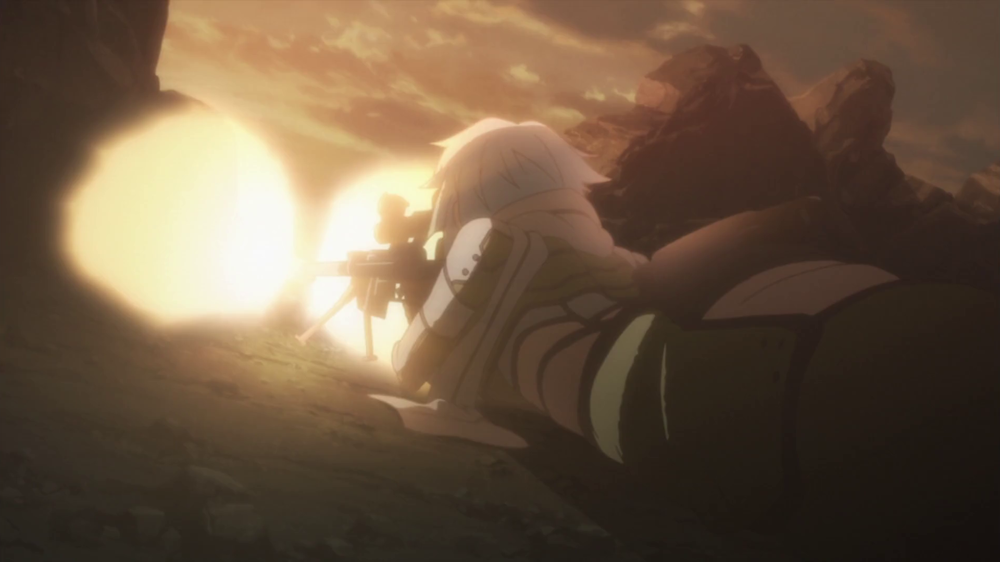

QUIZ
You're gonna see an intro
The theme song will be from another anime
Write the name of the anime the theme song is from
The first one makes me happy
...
1
2
3
4
5
6
7
8
1. Attack on Titan / Shingeki no Kyojin
2. One punch man
3. Cowboy Bebop
4. Future Diary / Mirai Nikki
5. Kiss x Sis
6. Spice and Wolf
7. FMA Brotherhood
8. Naruto
There's going to be a list of 10 shows
There's going to be 10 pairs of quotes
Hear a pair of quotes
Write down which show they're from
...
| Acchi Kocchi | K-ON! |
| Eden of the East | Legend of the Galactic Heroes |
| Fairy Tale | Nichijou |
| Gintama | One Piece |
| Hayate the Combat Butler | Daily Lives of High School Boys |
Question 1
“I’ve always wanted someone to ask me ‘Would you like fries with that?’”
“Oh my god! He’s deflowering my guitar!”
Question 2
“He’s cleaning our floors. That fiend!”
“Shoot her to death, without killing her!”
Question 3
“I wonder if nipples grow back.”
“Panties are the symbol of happiness.”
Question 4
“Look, my hand’s a hook. I can only be a pirate or a coat hanger now.”
“Anime staff! You think you can get away with such laziness?!”
Question 5
“The Earth must be becoming tsundere.”
“Fine, I’ll step aside for today, but I’ll bring a stronger hamster next time!”
Question 6
“There there. Your stomach sounds pretty cute, so don’t be embarrassed by it.”
“Stop! Santa’s HP is already 0.”
Question 7
“We’re all dragon slayers and yet, why am I the only one without a cat?”
“Wow, that’s the first time a house ever waved at me.”
Question 8
“I want to be an onion.”
“Arriving by goat doesn’t violate school policy!”
Question 9
“I remember having amnesia.”
“It’s soaked up various manly fluids, including but not limited to sweat and tears.”
Question 10
“The right to violate the rights of the people belongs to the people.”
“Alcohol is humanity’s friend.”


K-ON!


One Piece


Daily Lives of High School Boys


Gintama


Hayate the Combat Butler


Acchi Kocchi


Fairy Tail


Nichijou


Eden of the East


Legend of the Galactic Heroes
You're gonna see a thing
Write down what it is
Write down which show its from
e.g. "Vegeta's scouter from the show Dragon Ball Z"
...
1
2
3
4
5

6
7
8
9
10
1. Ichigo's bankai from Bleach
2. The dominator from Psycho-Pass
3. Vash's gun from Trigun
4. Tsukasa's staff from .hack//SIGN
5. Alucards's ARMS .454 Casull Auto (gun) from Hellsing
6. Saitama's gloves from One Punch Man
7. Ryugu Rena's cleaver from Higurashi / When They Cry
8. Celty Sturluson's helmet from Durarara
9. Sakura's staff from Card Captor Sakura
10. Lucy's keys from Fairy Tail
You're gonna see somebody
Write down who it is
Write down which show they're from
...

1

2
3
4

5

6
7

8

9

10 (Two Names)

1. Sinon from Sword Art Online

2. Yoko Littner from Gurren Lagenn
3. Najica from Najica, Blitz Tactics
4. Gray from Fairy Tail

5. Haruka Nanase from Free!


6. Kurisu Makise from Steins;Gate

7. Leafa / Kirigaya Suguha from Sword Art Online


8. Ayumu Aikawa from Kore wa Zombie desu ka


9. Hiraga Saito from Zero No Tsukaima / Familiar Of Zero

10. Nina and Alexander from Full metal Alchemist
You'll see a video
Then write down what happens next
e.g. "The Kool-Aid guy bursts through the wall!"
...
1
2
3
4
5
1
2
3
4
5
It's over